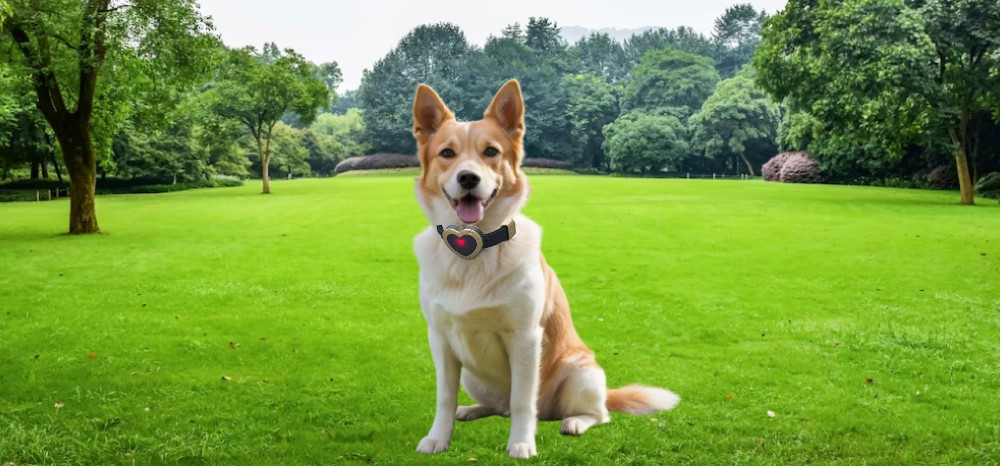
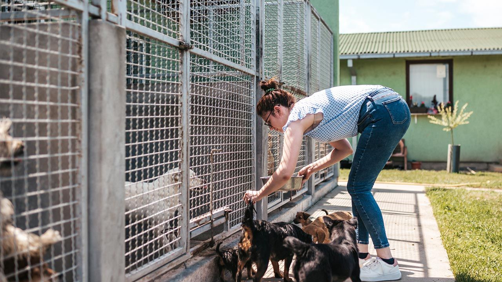
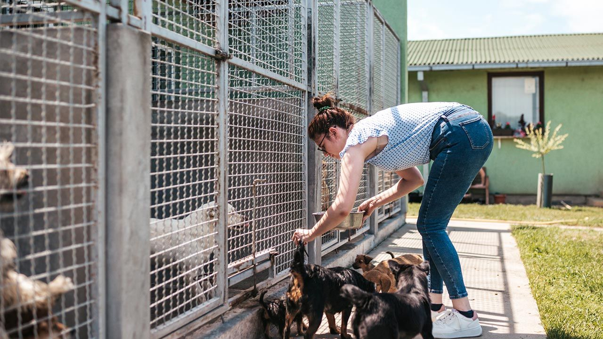

Nosotros

Bienvenidos a Nuestro Dispositivo
 

Somos una ONG sin fines de lucro.
RESCATE MASCOTAS es un refugio de animales que trabaja en la concientización por medio del rescate y del sistema de “puertas abiertas”: cualquiera puede llegarse y trabajar en conjunto, involucrando.
Nuestra misión es cerrar el círculo que comienza con el rescate, sigue con la recuperación, el albergue y termina con la adopción de un animal en estado de abandono o maltrato, involucrando a la sociedad, creando conciencia, al lograr la identificación con el animal rescatado.
El Campito es el único refugio de América Latina que tiene más de 200 perritos especiales, 110 de ellos totalmente inválidos, que se movilizan con sus carros o sillita.